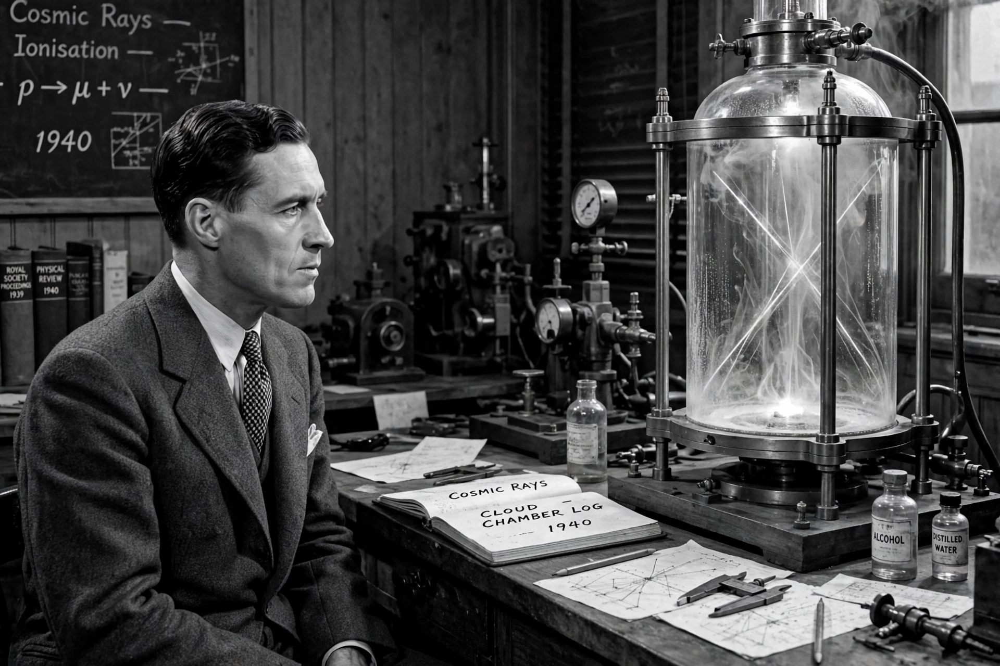

Patrick Maynard Stuart Blackett, Baron Blackett (18 November 1897 – 13 July 1974) was a British experimental physicist known for his work on cloud chambers, cosmic rays and paleomagnetism. He won the Nobel Prize in Physics in 1948.

Blackett served as a naval officer in the First World War, fighting at Jutland, then studied at Cambridge under Ernest Rutherford. At the Cavendish Laboratory he obtained the first cloud-chamber photographs of nuclear transmutation of nitrogen into oxygen.
With Giuseppe Occhialini he developed the counter-controlled cloud chamber, confirming the positron and producing photographs of electron-positron pair production and annihilation, work central to quantum electrodynamics.
During the Second World War Blackett pioneered operational research, notably for RAF Coastal Command anti-submarine warfare, and advised on military strategy. He later moved to Manchester and Imperial College London, studied rock magnetism supporting continental drift, and advised the Labour government on science policy. He was raised to the peerage in 1969.